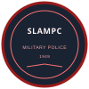
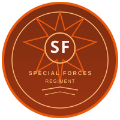

The complete picture of Sri Lanka's defence establishment — Army, Navy, Air Force, Police and the agencies of the Ministry of Defence that keep the nation secure. Compiled from public records. Not for operational use.
The Ministry of Defence oversees Sri Lanka's armed forces and the wider defence establishment — the agencies, auxiliary forces and institutions that support the Army, Navy, Air Force and Police.

Civilian maritime law-enforcement arm of the MOD — patrol craft and fast interceptors guarding coastal waters and the EEZ since 2009.

National auxiliary security force of ~33,687 personnel, guarding state institutions and infrastructure island-wide.
School youth corps training ~85,000 cadets in drill, leadership and first aid across 30 battalions and 9 provincial HQs.
State security company of the MOD — protects 100+ state institutions and provides maritime security with ~2,500 staff.

South Asia's only dedicated defence university — tri-service officer education plus medicine, engineering and law at Ratmalana.
Tri-service senior command and staff training college at Sapugaskanda, conferring the psc qualification since 2007.

Tri-service coordination since 1985, CDS since 2009. Abolished — the CDS (Repeal) Act gazetted 15 May 2026 ended the post.
Welfare of war-disabled tri-force & police members (1999). ~157,000 beneficiary families, ~40,000 disabled veterans.
ශ්රී ලංකා යුද්ධ හමුදාව · EST. 1881

LIEUTENANT GENERAL
26TH COMMANDER

Lieutenant General Nilantha Premaratne RSP
RSP, USP, ndc, psc
Assumed command: August 1, 2026
Click any row to view full biography
| # | Name | Period | Notable |
|---|---|---|---|
| 26th | Lt Gen. Nilantha Premaratne | 2026–Present | Author; RSP x2; UN MINURSO |
| 25th | Lt Gen. Lasantha Rodrigo | 2024–2026 | Operation Yukthiya |
| 24th | Gen. Vikum Liyanage | 2022–2024 | Economic crisis leadership |
| 23rd | Gen. Shavendra Silva | 2019–2022 | 58 Division hero, COVID-19 response |
| 22nd | Gen. Mahesh Senanayake | 2017–2019 | 2019 presidential candidate |
| 21st | Gen. Crishantha De Silva | 2015–2017 | First engineer commander |
| 20th | Gen. Daya Ratnayake | 2013–2015 | Most decorated; Thoppigala hero |
| 19th | Lt Gen. Jagath Jayasuriya | 2009–2013 | Largest command in SLA history |
| 18th | FM Sarath Fonseka | 2005–2009 | Ended 26-year civil war; Field Marshal |
| 17th | Gen. Shantha Kottegoda | 2004–2005 | Ceasefire period |
| 16th | Gen. Lionel Balagalle | 2000–2004 | Ceasefire & peace talks |
| 15th | Gen. Srilal Weerasooriya | 1998–2000 | Elephant Pass fall |
| 14th | Gen. Rohan Daluwatte | 1996–1998 | Operation Jayasikurui |
| 13th | Gen. Gerry H. de Silva | 1994–1996 | Recapture of Jaffna |
| 12th | Gen. Cecil Waidyaratne | 1991–1993 | Civil war escalation |
| 11th | Gen. Hamilton Wanasinghe | 1988–1991 | JVP Insurrection conclusion |
| 10th | Gen. Nalin Seneviratne | 1985–1988 | IPKF period & JVP Insurrection |
| 9th | Gen. Tissa Weeratunga | 1981–1985 | Early Tamil militancy |
| 8th | Gen. Denis Perera | 1977–1981 | Deshamanya; 26yr delayed promotion |
| 7th | Gen. Sepala Attygalle | 1967–1977 | Longest serving (10yrs); 1971 JVP |
| 6th | Maj Gen. Bertram Heyn | 1966–1967 | Deshabandu; post-coup era |
| 5th | Maj Gen. Richard Udugama | 1964–1966 | Deshamanya; MBE |
| 4th | Maj Gen. H.W.G. Wijeyekoon | 1960–1963 | OBE; peacetime consolidation |
| 3rd | Maj Gen. Anton Muttukumaru | 1955–1959 | First Ceylonese cmdr |
| 2nd | Brig. Sir Francis Reid | 1952–1955 | CBE; army development |
| 1st | Brig. Roderick Sinclair | 1949–1952 | Founded Ceylon Army |

1881
The oldest and largest infantry regiment of the Sri Lanka Army. Played a pivotal role throughout the Sri Lankan Civil War, deployed across all major theaters of operations.

1956
Named after the legendary King Dutugemunu's Sinha warrior. One of the most decorated regiments with extensive combat operations across the Northern and Eastern provinces.
1962
Light infantry regiment named after King Gemunu (Dutugemunu). Specializes in jungle warfare and counter-insurgency operations with extensive combat experience.
1962
Renowned for the celebrated "Gajaba 2" operation. One of the most battle-hardened regiments in the Sri Lanka Army with multiple successful offensive campaigns.

1985
Named after King Vijayabahu I who liberated Sri Lanka from Chola occupation. Formed during the escalating civil war and saw heavy combat in the northern theatre.

1993
Elite mechanized infantry unit operating BMP-2 and BTR armored personnel carriers. Specializes in rapid assault operations and combined arms maneuvers.

1980
Elite special operations force trained in airborne, amphibious, and unconventional warfare. Conducts deep reconnaissance, direct action, and counter-terrorism operations.

1980
Premier special operations unit specializing in long-range reconnaissance, direct action, and unconventional warfare. Conducts high-risk operations behind enemy lines.

1955
Armored warfare branch operating T-55 main battle tanks, BMP-2 infantry fighting vehicles, and BTR-80 APCs. Provides decisive armored punch in offensive operations.

1949
Fire support branch operating field guns, howitzers, mortars, and rocket systems. Provides indirect fire support for ground forces across all operational theaters.

1950
Combat engineering corps responsible for bridging, demolition, mine clearance, fortification construction, and route maintenance during operations.
1972
Communications and information systems corps. Manages all military communications, radio networks, cyber defense, and electronic warfare support for the army.

1990
Intelligence corps responsible for tactical and strategic intelligence gathering, counter-intelligence, and battlefield surveillance through HUMINT and SIGINT.

1999
Ceremonial and protective unit responsible for the security of the President of Sri Lanka and the Presidential Complex. Also performs state ceremonial duties.

1950
Light infantry regiment trained in marksmanship and rifle tactics. Maintains high standards of individual fieldcraft and small-unit infantry operations.

1987
Reserve force comprising trained civilian volunteers. Provides territorial defense, internal security support, and can be mobilized during national emergencies.

1950
Logistics corps handling supply, transport, fuel, and rations. Keeps every division fed, fueled, and moving in the field.

1949
Medical corps providing battlefield casualty care, field hospitals, evacuation, and preventive medicine for all formations.

1951
Corps responsible for repair, recovery, and maintenance of all army vehicles, weapons, and equipment.

1950
Corps managing weapons, ammunition, explosives, and technical stores from depots to forward units.

1949
Military police responsible for discipline, law and order, traffic control, prisoner handling, and VIP security.
The Sri Lanka Navy operates 271 vessels across 7 area commands. From Hamilton-class frigates to locally-built Wave Rider patrol craft, the SLN maintains one of the largest naval forces in the Indian Ocean region.

VICE ADMIRAL
27TH COMMANDER

Vice Admiral Damian Fernando
Assumed command: July 2026
Click any row to view full biography
| # | Name | Period | Notable |
|---|---|---|---|
| 27th | VAdm Damian Fernando | 2026–Present | Gunnery & missile specialist |
| 26th | Adm Kanchana Banagoda | 2025–2026 | Combined Maritime Forces |
| 25th | Adm Priyantha Perera | 2022–2024 | Naval Strategy 2030 |
| 24th | Adm Nishantha Ulugetenne | 2020–2022 | Fleet modernization |
| 23rd | Adm Piyal De Silva | 2019–2020 | Basketball champion & diver |
| 22nd | Adm Sirimevan Ranasinghe | 2017–2018 | Longest SLN voyage |
| 21st | Adm Travis Sinniah | 2017 | Shortest tenure; RSP x3 |
| 20th | Adm Ravindra Wijegunaratne | 2015–2017 | WV recipient; CDS 2017-2020 |
| 19th | Adm Jayantha Perera | 2014–2015 | Gunnery specialist |
| 18th | Adm Jayanath Colombage | 2012–2014 | Author; PhD; Ambassador |
| 17th | Adm Somathilake Dissanayake | 2011–2012 | Most decorated naval officer |
| 16th | Adm Thisara Samarasinghe | 2009–2011 | Post-war reconstruction |
| 15th | Adm of the Fleet Wasantha Karannagoda | 2005–2009 | 4-star rank; Eelam War IV |
| 14th | Adm Daya Sandagiri | 2001–2005 | First naval CoDS; Sea Tiger ops |
| 13th | Adm H.C.A.C. Tissera | 1997–2000 | Cmdt Naval & Maritime Academy |
| 12th | Adm D.A.M.R. Samarasekara | 1992–1997 | Post-assassination command |
| 11th | Adm W.W.E.C. Fernando | 1991–1992 | Assassinated by LTTE 1992 |
| 10th | Adm H.A. Silva | 1986–1991 | Early Eelam War; IPKF period |
| 9th | VAdm A.H.A. de Silva | 1983–1986 | JOSSOP; early conflict |
| 8th | RAdm A.W.H. Perera | 1979–1983 | Fleet expansion |
| 7th | RAdm D.B. Goonesekara | 1973–1979 | SRNS→SLN transition |
| 6th | RAdm D.V. Hunter | 1970–1973 | 1971 JVP response |
| 5th | RAdm R. Kadiragamar | 1960–1970 | Longest-serving early cmdr |
| 4th | RAdm G.R.M. de Mel | 1955–1960 | First Ceylonese cmdr |
| 3rd | Cmde P.M.B. Chavasse | 1953–1955 | Queen's visit 1953 |
| 2nd | Capt J.R.S. Brown | 1951–1953 | Transitional command |
| 1st | Capt W.E. Banks | 1950–1951 | Founded Royal Ceylon Navy |
_underway.JPG?width=400) FRIGATE
FRIGATEUSA | x2
76mm Mk 75. High endurance cutters, SLNS Gajabahu & Ranawickrama.
 FRIGATE
FRIGATEChina | x1
PJ33A 100mm + SY-1A. Jiangwei I-class missile frigate.
.jpg?width=400) AOPV
AOPVIndia | x2
Twin 37mm AA. Goa Shipyard built SLNS Sayura & Sayurala.
 OPV
OPVIndia/USA | x4
30mm / 76mm. Offshore patrol vessel backbone.
 FMV
FMVIsrael | x2
Gabriel II ASM. Fast missile vessels, SLNS Nandimithra & Suranimala.
 GUNBOAT
GUNBOATChina | x7
37mm + 12.7mm. Type 062 coastal gunboats.
.jpg?width=400) GUNBOAT
GUNBOATAustralia | x2
40mm Bofors. Australian patrol gunboats.
 FAC
FACIsrael/SL | x45+
25mm + 12.7mm. Colombo-class built locally.
 PATROL
PATROLSri Lanka | x192
Locally built patrol boats.
 LANDING
LANDINGChina/SL | x7
LCU/LCM landing craft for amphibious support.
The Sri Lanka Air Force operates 160+ aircraft across 13 flying squadrons and 15 stations, organized under 4 Zonal Commands plus the Air Defence Command. From Israeli Kfir fighters to Russian Mi-24 attack helicopters, the SLAF maintains a diverse fleet.

AIR MARSHAL
20TH COMMANDER

Air Marshal Vasu Bandu Edirisinghe
Assumed command: January 29, 2025
Click any row to view full biography
| # | Name | Period | Notable |
|---|---|---|---|
| 20th | AVM Vasu Bandu Edirisinghe | 2025–Present | 7,000+ helicopter hours; NVG expert |
| 19th | ACM Udeni Rajapaksa | 2023–2025 | First KDU graduate cmdr; 7,000+ hrs |
| 18th | ACM Sudarshana Pathirana | 2020–2023 | First supersonic pilot; Kfir ops |
| 17th | ACM Sumangala Dias | 2019–2020 | COVID-19 response |
| 16th | ACM Kapila Jayampathy | 2016–2019 | VVIP flying; No. 4 Sqn |
| 15th | ACM Gagan Bulathsinghala | 2015–2016 | VVIP pilot 4,500+ hrs; flew 4 presidents |
| 14th | ACM Kolitha Gunathilake | 2014–2015 | Pucará ground attack; CDS 2015-17 |
| 13th | ACM Harsha Abeywickrama | 2011–2014 | F-7 & Kfir pioneer; BMC founder |
| 12th | MRAFL Roshan Goonetileke | 2006–2011 | First Marshal of SLAF; Eelam War IV |
| 11th | ACM Donald Perera | 2002–2006 | CoDS; Ambassador to Israel |
| 10th | ACM Jayalath Weerakkody | 1998–2002 | MiG-27 acquisition; NCO School |
| 9th | ACM Oliver Ranasinghe | 1994–1998 | UAV pioneer; Jaffna airlift 1985 |
| 8th | ACM Terry Gunawardena | 1990–1994 | Revived fighter capability; F-7/Pucará |
| 7th | ACM Walter Fernando | 1985–1990 | Early locally trained pilot |
| 6th | ACM Dick Perera | 1981–1985 | Airfield reclamation programmes |
| 5th | ACM Harry Goonatilake | 1976–1981 | First batch locally trained pilots |
| 4th | ACM Paddy Mendis | 1971–1976 | 1971 JVP Insurrection; youngest cmdr |
| 3rd | AVM Rohan Amarasekera | 1962–1970 | WWII DFC & Bar; RAF Bomber Command |
| 2nd | AVM J.L. Barker | 1958–1962 | RCyAF development; RAF seconded |
| 1st | G/Cpt G.C. Bladon | 1951–1958 | Founded RCyAF |
| Origin | Israel (Mirage derivative) |
|---|---|
| Engine | GE J79-GE-17, 5,200 lbf |
| Max Speed | Mach 2.0 |
| Hardpoints | 7-9 |
| Cannons | 2x DEFA 553 30mm |
| AAM | Python-3 / AIM-9 |
| AGM | AGM-65 Maverick |
| Max Payload | 6,085 kg |
| Range | 3,700 km ferry |

| Origin | China (MiG-21 derivative) |
|---|---|
| Max Speed | Mach 2.0 |
| Hardpoints | 5 |
| Cannons | 2x GSh-23L 23mm |
| AAM | PL-2 / PL-5 |
| Bombs | Up to 500kg |

| Origin | China / Pakistan (Karakorum 8) |
|---|---|
| Engines | 1x Garrett TFE731, 3,600 lbf |
| Max Speed | 800 km/h (Mach 0.75) |
| Hardpoints | 4 |
| Weapons | 23mm gun pod / PL-7 AAM / bombs |
| Crew | 2 (tandem) |
| Role | Advanced & fighter conversion training |

60,000+ personnel across 608 stations. 45 territorial divisions and 78 functional divisions maintain law and order.

INSPECTOR GENERAL
37TH INSPECTOR GENERAL

Priyantha Weerasooriya
First officer to rise from constable to IGP
Assumed office: August 2025
Click any row to view full biography
| # | Name | Period | Notable |
|---|---|---|---|
| 37th | Priyantha Weerasooriya | 2025–Present | Constable to IGP; UN peacekeeping 2008-2011 |
| 36th | Deshabandu Tennakoon | 2024–2025 | First IGP removed by Parliament resolution |
| 35th | C.D. Wickramaratne | 2020–2023 | Post-Easter reforms & COVID-19 response |
| 34th | Pujith Jayasundara | 2016–2020 | IGP during 2019 Easter bombings |
| 33rd | N.K. Illangakoon | 2011–2016 | Served full five-year term to retirement |
| 32nd | Mahinda Balasuriya | 2009–2011 | Led police during end of civil war |
| 31st | Jayantha Wickramarathne | 2008–2009 | Final civil war offensive |
| 30th | Victor Perera | 2006–2008 | Eelam War IV beginning |
| 29th | Chandra Fernando | 2004–2006 | Post-tsunami recovery period |
| 28th | Indra de Silva | 2003–2004 | Short tenure |
| 27th | T.E. Anandaraja | 2002–2003 | Norwegian ceasefire talks period |
| 26th | Lakdasa Kodituwakku | 1998–2002 | Major civil war operations |
| 25th | Wickremasinghe Rajaguru | 1995–1998 | Period of major LTTE operations |
| 24th | Frank de Silva | 1993–1995 | Eelam War III |
| 23rd | Ernest Perera | 1988–1993 | JVP Insurrection II & Eelam War I/II |
| 22nd | Cyril Herath | 1985–1988 | Ethnic conflict escalation |
| 21st | Herbert Weerasinghe | 1985 | Short tenure |
| 20th | Rudra Rajasingham | 1982–1985 | 1983 Black July riots |
| 19th | Ana Seneviratne | 1978–1982 | Early UNP era |
| 18th | Stanley Senanayake | 1970–1978 | 1971 JVP Insurrection |
| 17th | Aleric Abeygunawardena | 1967–1970 | Post-independence era |
| 16th | John Attygalle | 1966–1967 | Short tenure |
| 15th | S.A. Dissanayake | 1963–1966 | 1960s political crises |
| 14th | M. Walter F. Abeykoon | 1959–1963 | Late 1950s unrest |
| 13th | Osmund de Silva | 1955–1959 | 1958 communal riots |
| 12th | Richard Aluwihare | 1946–1955 | First Ceylonese IGP; independence 1948 |
| 11th | Ranulph Bacon | 1944–1946 | End of WWII |
| 10th | G.H.R. Halland | 1942–1944 | WWII period |
| 9th | Philip Norton Banks | 1937–1942 | Pre-war & early wartime |
| 8th | Herbert Dowbiggin | 1913–1937 | Longest-serving colonial IGP; fingerprinting pioneer |
| 7th | Ivor Edward David | 1910–1913 | Edwardian era |
| 6th | Cyril Longden | 1905–1910 | Colonial era |
| 5th | Albert De Wilton | 1902–1905 | Colonial era |
| 4th | Louis Knollys | 1891–1902 | Late Victorian era |
| 3rd | G.W.R. Campbell | 1873–1891 | Second tenure; served 18 years |
| 2nd | F.R. Saunders | 1872–1873 | Short tenure |
| 1st | G.W.R. Campbell | 1866–1872 | Founded Ceylon Police Force 1866 |
Est. 1 March 1983 · ~6,000
Counter-terrorism, counter-insurgency, hostage rescue, VIP protection, jungle warfare. SAS-trained since 1983; first unit to adopt patterned camo. Deployed in the Eastern Province, Mannar/Vavuniya and Colombo.

Est. 1866
Major crime investigation. Homicide, fraud, organized crime. Sri Lanka's premier detective agency.
Est. 1979
Terrorism and extremism cases. Intelligence-driven operations against terror networks.
Est. 1974
Drug enforcement. Interdiction of narcotics. Works with DEA, UNODC.
Est. 2011
Digital forensics. Online fraud. Cyber terrorism. Data protection enforcement.
Est. 1998
Maritime policing. Coastal law enforcement. Joint ops with Navy.
Est. 2015
Money laundering, corruption, financial fraud investigations.
Est. 1950s
Road safety. Traffic enforcement. Accident investigation. Highway patrol.
Est. 1948
Bomb detection. Drug detection. Search and rescue. Tracking.
Est. 1980. "For the Nation." Counter-terrorism, direct action, hostage rescue. 6-month intensive training.
Est. 1986. Deep recon, guerrilla warfare, unconventional ops. HALO/HAHO, SERE, combat diving.

Naval special forces. Maritime CT, VBSS, amphibious recon. Modeled after Royal Marine SBS.
Est. 1 March 1983. Paramilitary police. Counter-terrorism, VIP protection, jungle warfare. SAS-trained; first unit to adopt patterned camo (DPM).
The intelligence arm of the armed forces. Heads the Army's HUMINT network; the Special Forces' Long Range Reconnaissance Patrol (LRRP) operates under its command.
Brigs. Lionel Balagalle, Shantha Kottegoda, Kapila Hendawitharana, Suresh Sallay, Robin Jayasuriya · Cols. S. Javid Memon, Pushpa Kumara
The Army's intelligence corps/regiment that supplies trained intelligence personnel — HUMINT, counter-intelligence and analysis. Regimental centre at Karandeniya. Distinct from the DMI directorate.
Tactical & strategic intelligence gathering for the Army, battlefield surveillance, counter-intelligence operations.

Sri Lanka's primary civilian intelligence agency — internal and external. Created as the National Intelligence Bureau merging intel units from Army, Navy, Air Force and Police after the 1983 riots exposed gaps.
Under the Ministry of Defence; Director reports to the Secretary of Defence. Intelligence collection & analysis, undercover investigation, background checks for sensitive institutions, VIP/VVIP threat assessments. Traditionally headed by a Police officer — precedent broken 2019 with a DMI officer.
A coordination and advisory post consolidating input across all intelligence agencies for government leadership — recommendation authority rather than direct operational control.
⚠ Lower confidence — thinly sourced. Treat as advisory until corroborated.

Elite deep-reconnaissance element of Army Special Forces operating behind enemy lines — long-range patrols, target acquisition and direct action under DMI direction. Cross-referenced with Military Intelligence Corps.

Counter-terrorism investigative arm — bridges Police and intelligence. Handles terrorism and extremism cases with intelligence-driven operations. Also listed under Police. Click for details →
Frequency hopping jamming for tactical comms denial
Signal intelligence and jamming stations
Direction-finding and warning systems

IP-Based Ground-to-Air Comms Monitoring. ADS-B Aircraft Monitoring. Open Source Intelligence System. Indigenous radar receiver for INDRA Mk II.
Vimana SII development. UAV research. Aircraft maintenance and modification.
Vehicle manufacturing and modification. UniAIMOV, UniCOLT production. Armoured vehicle maintenance.

The Army uses a British-derived numbered dress-code system published in its own dress regulations (2nd edition, January 2019). Click a dress for details.
Ceremonial detail (Armoured Corps regulations): chainmail shoulder pieces on Blues, red/black shoulder sash (Reconnaissance Regiment sergeants+), crimson waist sash, Sam Browne cross-belt, regimental "stable belt", black leather George boots with spurs. The Corps of Military Police wears scarlet "No.1 Presidential Scarlet" on President's Guard duty; Artillery's ceremonial gun troop wears dark blue full dress.

Standard combat uniform was plain olive green.
First unit to adopt patterned camouflage — British DPM, trained by ex-British special forces. Now a locally-made version of the same pattern.
First Army unit to camo up, using US M81 woodland sourced via the US and Pakistan.
Five-colour "blotch" pattern adopted army-wide (piloted first by the Commando Regiment). Now Dress No. 7.
New four-colour digital camouflage issued to the two elite regiments.
Special Boat Squadron adopted black/brown/grass-green digital on khaki-tan from 2009; whole Navy from May 2010. The Marine Battalion wears its own "Blue Digital".
Woodland-derived pattern in a blue colourway with an eagle motif woven into the design.
Worn between rank stripes — Scarlet: Engineering · Orange: Medical · White: Logistics · Dark green: Electrical · Silver grey: Shipwrights.

1972 — blue-orange-blue triband with the Army insignia centred

1972 — white field, national flag in the canton. Crest (2010): gold lion holding a sword on blue, ringed by a yellow lifebelt on a silver anchor.

2010 — sky-blue field, national flag in the canton, AF roundel lower-right

White field, two blue triangles meeting at centre, with the police emblem

Ensign of the Police Special Task Force

2010 — ensign of the Sri Lanka Coast Guard
 General (OF-9)Lieutenant General (OF-8)
General (OF-9)Lieutenant General (OF-8) Major General (OF-7)
Major General (OF-7) Brigadier (OF-6)
Brigadier (OF-6) Colonel / Lt. Colonel / Major
Colonel / Lt. Colonel / Major Captain / Lieutenant / Second Lieutenant
Captain / Lieutenant / Second Lieutenant WO I / WO II / Staff Sergeant / Sergeant
WO I / WO II / Staff Sergeant / Sergeant Corporal / Lance Corporal / Private
Corporal / Lance Corporal / Private
 Admiral (OF-9)Vice Admiral (OF-8)
Admiral (OF-9)Vice Admiral (OF-8) Rear Admiral (OF-7)
Rear Admiral (OF-7)

 MCPO / FCPO / Chief Petty Officer
MCPO / FCPO / Chief Petty Officer Petty Officer / Leading Seaman
Petty Officer / Leading Seaman Able Seaman / Seaman Recruit
Able Seaman / Seaman Recruit
 Air Chief Marshal (OF-9)
Air Chief Marshal (OF-9) Air Marshal (OF-8)
Air Marshal (OF-8)


 WO / Flight Sergeant / Sergeant
WO / Flight Sergeant / Sergeant Corporal / Lance Corporal / Aircraftman
Corporal / Lance Corporal / Aircraftman
Combat Excellence Medal

Order of Conspicuous Gallantry

Distinguished Service Order

Meritorious Service Medal

Son of the Nation Award

Long Service & Good Conduct

Civil War Campaign Medal

Complete Homeland Medal

Jaffna Campaign Medal


_20131004.JPG?width=400)


.jpg?width=200)
.jpg?width=200)


.jpg?width=200)

.jpg?width=200)


.jpg?width=200)


_01.jpg?width=200)


.jpg?width=200)


_right_front_view_at_JMSDF_Yokosuka_Naval_Base_November_3,_2022_01.jpg?width=200)


_b.jpg?width=400)


.jpg?width=400)


.jpg?width=400)


.jpg?width=200)
.jpg?width=200)


.png?width=200)


_S401_IMG_9845.jpg?width=200)
_in_Puchong,_Malaysia_(01).jpg?width=200)


.jpg?width=200)